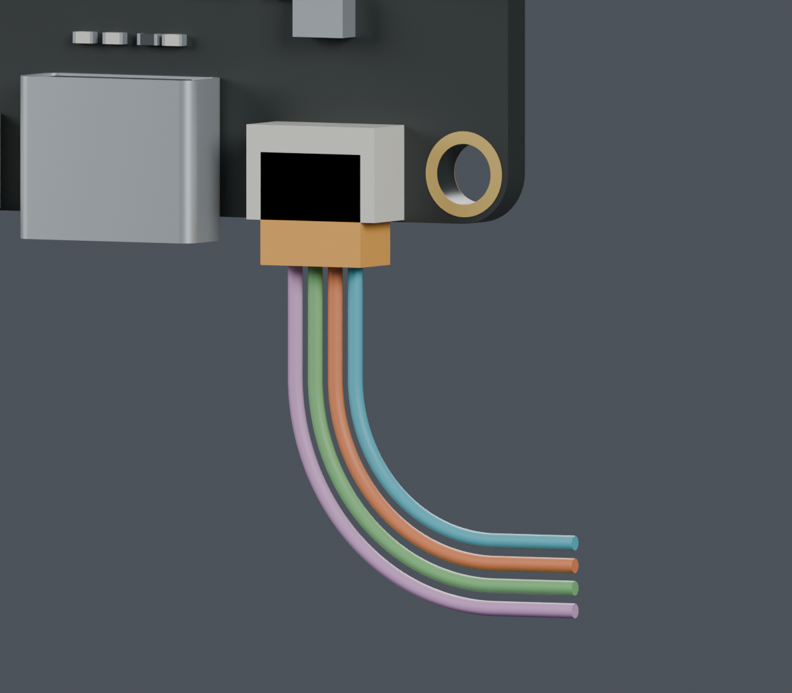
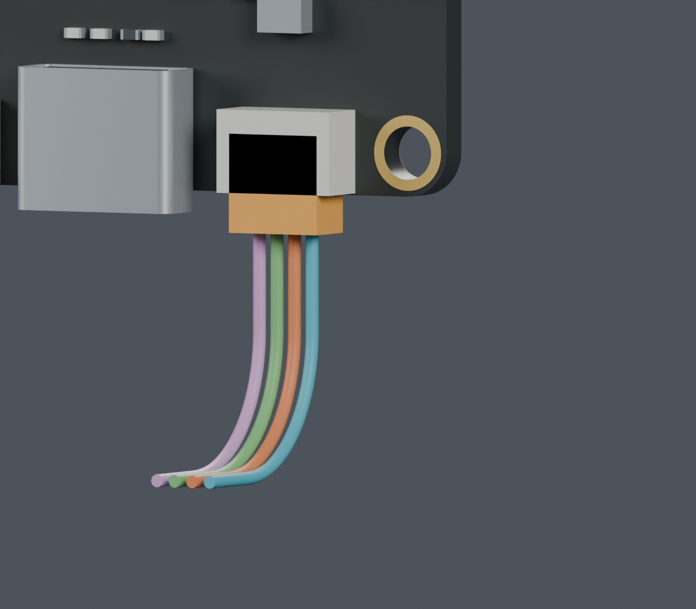

独立候选，未应用主模型。完整线束仍为BLOCKED；两段之间的活动线尚未连接，不能用于下料。
已查到JST SH原厂目录：无侧凸SHR-04V-S为5×2.8×5 mm；侧插配对参考长度6.25 mm，插座轴向4.25 mm，推导前侧外露2 mm。来源与CAD获取限制
微雪原理图只写SH1.0 4P，实际厂牌/料号仍未确认。橙色是条件性插头包络，四色仅为几何槽位。图片只显示CAM，支架隐藏；检查使用全部源实体。


| 检查 | 结果 |
|---|---|
| 名义插头、5 mm直出段、零位拔出 | PASS；实际插合、公差和照片误差未验证 |
| 两种端部线形与源实体 | PASS；130个组合姿态，线间净空下界约0.329 mm |
| 与旧Z206暂存段同时放入 | BLOCKED；两条候选均相交，保留失败记录 |
| 改用Z193临时分段后，两段共存 | PASS；4160组合，左转最小间隙1.969 mm、前转4.672 mm |
| 两段间活动线、固定点、整束装入、最终长度 | NOT_TESTED；仍需完成数字设计 |
Z206是路线暂存终点，不是硬件。只在独立研究中截短末尾13 mm竖直线，板卡和打印件保持。两段仍未相连，不能称为完整线束。
完整说明 · 可编辑比较场景 · 插头检查 · 局部线形 · 旧组合失败 · 30种后续尝试 · 低位分段检查 · 图像来源 · 复现命令 · 发布清单